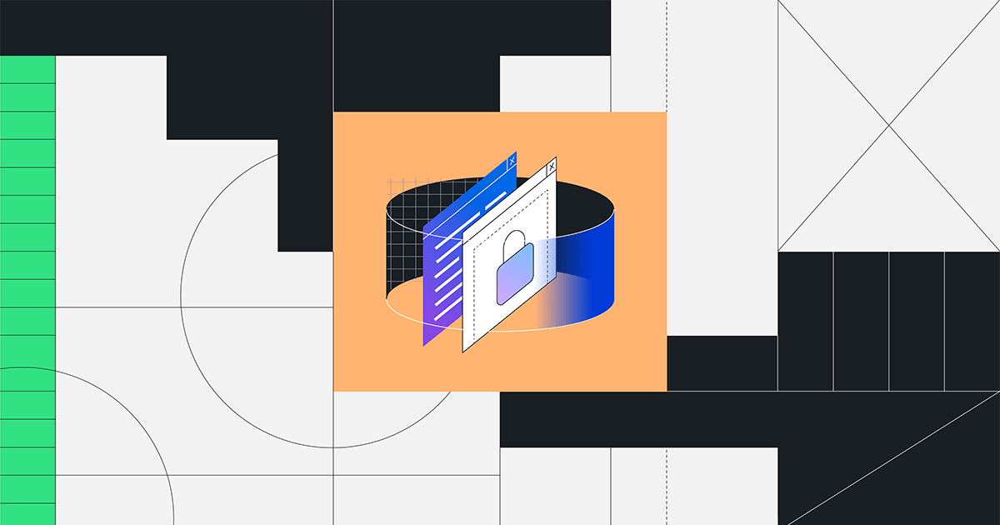

/Блог
Попробуйте GitHub CopilotКонтактный отдел продаж
Главная / Новости и аналитика / Новости компании
Мы обновили ключ хоста RSA SSH.
Примерно в 05:00 UTC 24 марта из соображений предосторожности мы заменили ключ хоста RSA SSH, используемый для защиты операций Git на GitHub.com.

23 марта 2023 г.
|3 минуты
Примерно в 05:00 UTC 24 марта из соображений предосторожности мы заменили ключ хоста RSA SSH, используемый для защиты операций Git на GitHub.com. Мы сделали это, чтобы защитить наших пользователей от любых шансов того, что злоумышленник выдаст себя за GitHub или подслушает их операции Git через SSH. Этот ключ не предоставляет доступ к инфраструктуре GitHub или данным клиентов. Это изменение влияет только на операции Git через SSH с использованием RSA. Веб-трафик на GitHub.com и операции HTTPS Git не затрагиваются.
Был заменен только ключ RSA SSH GitHub.com. Для пользователей ECDSA или Ed25519 никаких изменений не требуется. Наши ключи задокументированы здесь .
Что произошло и какие действия мы предприняли?
На этой неделе мы обнаружили, что закрытый ключ RSA SSH GitHub.com был ненадолго опубликован в общедоступном репозитории GitHub. Мы немедленно приняли меры по сдерживанию заражения и начали расследование, чтобы понять первопричину и последствия. Мы завершили замену ключа, и пользователи увидят, что изменение распространится в течение следующих тридцати минут. Некоторые пользователи, возможно, заметили, что новый ключ ненадолго присутствовал примерно в 02:30 UTC во время подготовки к этому изменению.
Обратите внимание, что эта проблема не является результатом компрометации каких-либо систем GitHub или информации о клиентах. Вместо этого разоблачение стало результатом того, что мы считаем непреднамеренной публикацией частной информации. У нас нет оснований полагать, что открытый ключ был использован не по назначению, и мы предприняли это действие из соображений предосторожности.
Если вы используете наши ключи ECDSA или Ed25519, вы не заметите никаких изменений и никаких действий не потребуется.
Если вы видите следующее сообщение при подключении к GitHub.com через SSH, читайте дальше.
@@@@@@@@@@@@@@@@@@@@@@@@@@@@@@@@@@@@@@@@@@@@@@@@@@@@@@@@@@@
@ WARNING: REMOTE HOST IDENTIFICATION HAS CHANGED! @
@@@@@@@@@@@@@@@@@@@@@@@@@@@@@@@@@@@@@@@@@@@@@@@@@@@@@@@@@@@
IT IS POSSIBLE THAT SOMEONE IS DOING SOMETHING NASTY!
Someone could be eavesdropping on you right now (man-in-the-middle attack)!
It is also possible that a host key has just been changed.
The fingerprint for the RSA key sent by the remote host is
SHA256:uNiVztksCsDhcc0u9e8BujQXVUpKZIDTMczCvj3tD2s.
Please contact your system administrator.
Add correct host key in ~/.ssh/known_hosts to get rid of this message.
Host key for github.com has changed and you have requested strict checking.
Host key verification failed.
Если вы видите приведенное выше сообщение, вам необходимо удалить старый ключ, выполнив следующую команду:
$ ssh-keygen -R github.com
Или вручную обновите ~/.ssh/known_hostsфайл, чтобы удалить старую запись.
Затем вы можете вручную добавить следующую строку, чтобы добавить в ~/.ssh/known_hostsфайл новую запись открытого ключа RSA SSH:
github.com ssh-rsa AAAAB3NzaC1yc2EAAAADAQABAAABgQCj7ndNxQowgcQnjshcLrqPEiiphnt+VTTvDP6mHBL9j1aNUkY4Ue1gvwnGLVlOhGeYrnZaMgRK6+PKCUXaDbC7qtbW8gIkhL7aGCsOr/C56SJMy/BCZfxd1nWzAOxSDPgVsmerOBYfNqltV9/hWCqBywINIR+5dIg6JTJ72pcEpEjcYgXkE2YEFXV1JHnsKgbLWNlhScqb2UmyRkQyytRLtL+38TGxkxCflmO+5Z8CSSNY7GidjMIZ7Q4zMjA2n1nGrlTDkzwDCsw+wqFPGQA179cnfGWOWRVruj16z6XyvxvjJwbz0wQZ75XK5tKSb7FNyeIEs4TT4jk+S4dhPeAUC5y+bDYirYgM4GC7uEnztnZyaVWQ7B381AK4Qdrwt51ZqExKbQpTUNn+EjqoTwvqNj4kqx5QUCI0ThS/YkOxJCXmPUWZbhjpCg56i+2aB6CmK2JGhn57K5mj0MNdBXA4/WnwH6XoPWJzK5Nyu2zB3nAZp+S5hpQs+p1vN1/wsjk=
Или автоматически обновите SSH-ключ RSA GitHub.com в своем файле ~/.ssh/known_hosts, выполнив в своем терминале следующую команду:
$ ssh-keygen -R github.com
$ curl -L https://api.github.com/meta | jq -r '.ssh_keys | .[]' | sed -e 's/^/github.com /' >> ~/.ssh/known_hosts
Вы можете убедиться, что ваши хосты подключаются через наш новый SSH-ключ RSA, убедившись, что вы видите следующий отпечаток пальца:
SHA256:uNiVztksCsDhcc0u9e8BujQXVUpKZIDTMczCvj3tD2s
Пользователи GitHub Actions могут видеть неудачные запуски рабочего процесса, если они используют actions/checkoutэту ssh-keyопцию. Мы обновляем actions/checkoutдействие во всех поддерживаемых тегах, включая @v2, @v3 и @main. Если вы прикрепите действие к SHA фиксации и воспользуетесь этой ssh-keyопцией, вам потребуется обновить рабочий процесс. Подробнее об этом процессе можно прочитать в нашей официальной документации по усилению безопасности действий .
Для получения дополнительной информации посетите нашу официальную документацию по отпечаткам открытых ключей SSH на GitHub .
Автор:
Майк Хэнли — директор по безопасности и старший вице-президент по разработке GitHub. До GitHub Майк был вице-президентом по безопасности в Duo Security, где он создавал и руководил подразделениями исследований, разработок и эксплуатации безопасности. После приобретения Duo компанией Cisco за 2,35 миллиарда долларов в 2018 году Майк возглавил трансформацию системы облачной безопасности Cisco, а затем работал в компании директором по информационной безопасности. Майк также несколько лет проработал в CERT/CC в качестве старшего члена технического персонала и исследователя безопасности, занимающегося прикладными программами исследований и разработок для Министерства обороны США и разведывательного сообщества.
Когда Майк не говорит о безопасности на GitHub, его можно найти в Анн-Арборе, штат Мичиган, с женой и восемью детьми.